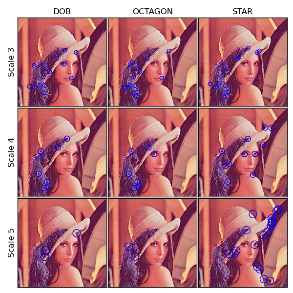

In this example we detect and plot the CenSurE (Center Surround Extrema) features at various scales using Difference of Boxes, Octagon and Star shaped bi-level filters.
from skimage.feature import keypoints_censure
from skimage.data import lena
from skimage.color import rgb2gray
import matplotlib.pyplot as plt
# Initializing the parameters for Censure keypoints
img = lena()
gray_img = rgb2gray(img)
min_scale = 2
max_scale = 6
non_max_threshold = 0.15
line_threshold = 10
_, ax = plt.subplots(nrows=(max_scale - min_scale - 1), ncols=3,
figsize=(6, 6))
plt.subplots_adjust(wspace=0.02, hspace=0.02, top=0.94,
bottom=0.02, left=0.06, right=0.98)
# Detecting Censure keypoints for the following filters
for col, mode in enumerate(['dob', 'octagon', 'star']):
ax[0, col].set_title(mode.upper(), fontsize=12)
keypoints, scales = keypoints_censure(gray_img, min_scale, max_scale,
mode, non_max_threshold,
line_threshold)
# Plotting Censure features at all the scales
for row, scale in enumerate(range(min_scale + 1, max_scale)):
mask = scales == scale
x = keypoints[mask, 1]
y = keypoints[mask, 0]
s = 0.5 * 2 ** (scale + min_scale + 1)
ax[row, col].imshow(img)
ax[row, col].scatter(x, y, s, facecolors='none', edgecolors='b')
ax[row, col].set_xticks([])
ax[row, col].set_yticks([])
ax[row, col].axis((0, img.shape[1], img.shape[0], 0))
if col == 0:
ax[row, col].set_ylabel('Scale %d' % scale, fontsize=12)
plt.show()
Python source code: download (generated using skimage 0.9.0)